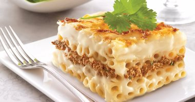

Pastitsio

About Pastitsio
Pastitsio, sometimes referred to as Greek lasagna, is easy to make
with a savory meat sauce, tubular pasta, rich béchamel and cheese.
It tastes incredible — everyone loves this comforting dish!
Ingredients
Meat Sauce:
- butter
- onion, chopped
- garlic, crushed
- lean ground beef
- crushed tomatoes
- dry red wine
- beef broth
- tomato paste
- chopped fresh parsley
- ground cinnamon or cinnamon stick
- clove
- salt and pepper to taste
Pasta:
- bucatini or pastitsio pasta
- butter
- grated Kefalotiri, Parmesan, or Pecorino cheesegrated Kefalotiri,
Parmesan, or Pecorino cheese
- ground nutmeg
- salt
- freshly ground black pepper
- eggs, lightly beaten
Bachamel Sauce:
- butter
- all-purpose flour
- milk
- ground nutmeg
- salt
- ground black pepper
- grated Kefalotiri, Parmesan, or Pecorino cheese, divided
- egg, lightly beaten
- egg yolk, lightly beaten
Steps
- Gather all ingredients. Preheat the oven to 350 degrees F (175 degrees C).
Grease a 9x13-inch casserole dish.
- Make the meat sauce: Melt butter in a skillet over medium heat. Add onion and garlic;
cook and stir gently until onion is soft, 3 to 5 minutes. Increase heat and add ground beef;
cook and stir until browned and crumbly, about 5 minutes. Stir in tomatoes, wine, broth,
tomato paste, parsley, cinnamon, salt, pepper, and clove. Cover and simmer over low heat
for 20 minutes.
- Meanwhile prepare the pasta: Bring a large pot of lightly salted water to a boil.
Add pasta and cook until tender yet firm to the bite, 8 to 10 minutes. Drain.
- Pour melted butter, 1/4 cup grated cheese, nutmeg, salt, and pepper over pasta;
toss well and cool briefly. Add 2 eggs and toss again; set aside.
- Make the béchamel: Melt butter in a saucepan over medium-low heat. Add flour;
cook and stir for 2 minutes. Pour in milk and bring to a boil, stirring constantly.
Season with nutmeg, salt, and pepper. Cool slightly before stirring in 1 cup grated
cheese, beaten egg, and egg yolk. Then stir 1/2 cup of béchamel sauce into meat sauce.
- To assemble pastitsio: Arrange pasta in the bottom of the prepared baking dish so that
all of the noodles are nicely lined up and are as level as possible for a great visual effect
when serving. Spoon meat sauce over pasta; top with remaining béchamel sauce, spreading evenly.
Sprinkle remaining 1/2 cup grated cheese on top.
- Bake in the preheated oven until bubbling and golden brown on top, about 50 minutes.
- Let stand for 10 minutes before cutting into squares.